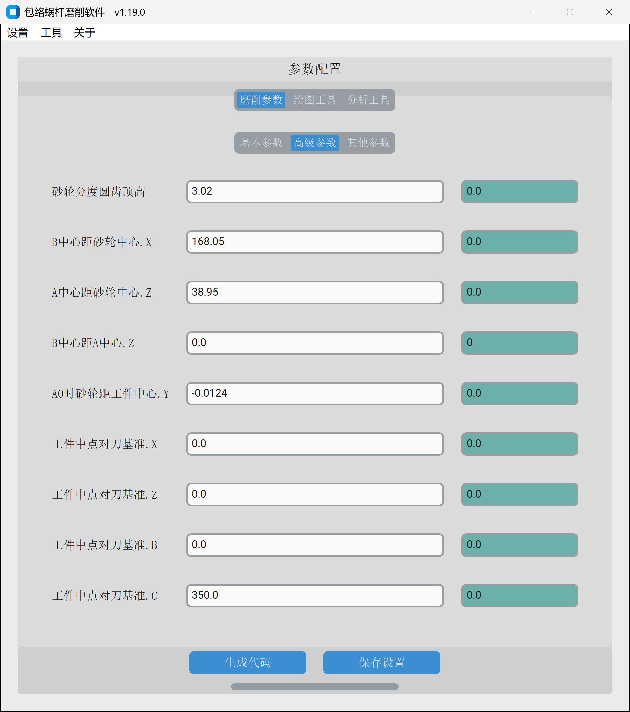
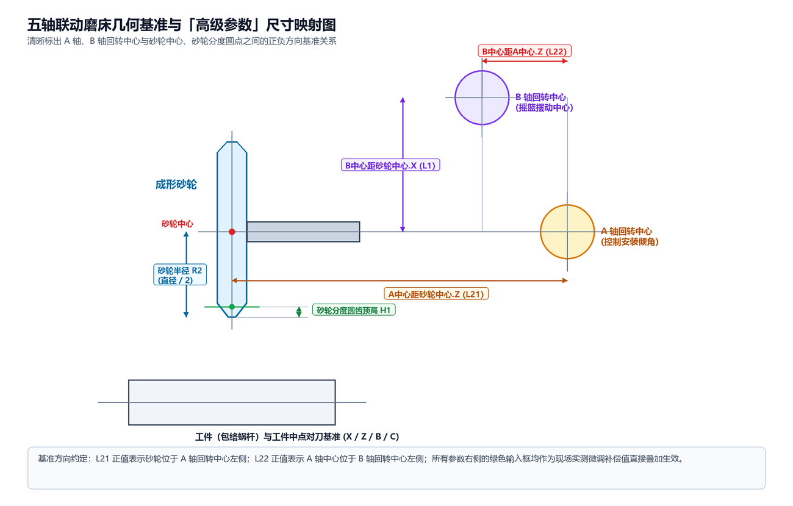

2.2 高级参数（机床基准与对刀）
高级参数 共有 9 项核心几何与对刀参数，描述砂轮外沿、五轴机床 A / B 轴回转中心相对关系以及实际对刀点基准坐标。
实测微调说明：每项右侧的绿色输入框均会在计算时直接与左侧主值相加，用于现场试磨后的微调补偿，无需覆写原机械出厂标定值。

一、五轴机床几何基准示意图

二、9 项参数逐项详解
| 序号 | 软件参数名称 | 示例值 (Sample_C_117) |
含义与方向约定 |
|---|---|---|---|
| 1 | 砂轮分度圆齿顶高 |
3.02 mm |
砂轮齿廓理论分度圆到齿顶（外缘）的径向高度 。必须与砂轮实际修整尺寸（锥面廓形 中的 中径齿顶高）一致。 |
| 2 | B中心距砂轮中心.X |
168.05 mm |
机床 B 轴回转中心到砂轮主轴中心在 X 轴方向上的距离 。 |
| 3 | A中心距砂轮中心.Z |
38.95 mm |
机床 A 轴回转中心到砂轮中心在 Z 轴方向上的距离 ；正值表示砂轮位于 A 轴回转中心左侧。 |
| 4 | B中心距A中心.Z |
0.0 mm |
机床 B 轴回转中心到 A 轴回转中心在 Z 轴方向上的距离 ；正值表示 A 轴中心位于 B 轴中心左侧。 |
| 5 | A0时砂轮距工件中心.Y |
-0.0124 mm |
当 A = 0° 时，砂轮中心与工件中心在 Y 轴方向的标定基准偏差 ；用于计算最终输出的 Y轴加工位置。 |
| 6 | 工件中点对刀基准.X |
0.0 mm |
手动对刀将砂轮分度圆基准点对准工件喉部理论中点时，机床 X 轴坐标 。 |
| 7 | 工件中点对刀基准.Z |
0.0 mm |
同上，对刀时刻的机床 Z 轴坐标 。 |
| 8 | 工件中点对刀基准.B |
0.0 ° |
同上，对刀时刻的 B 轴绝对角度 。 |
| 9 | 工件中点对刀基准.C |
350.0 ° |
同上，对刀时刻的工件主轴 C 轴起始相位角 （多齿分度或槽位对准时尤为关键）。 |
三、核心几何换算关系
软件依据上述 9 项参数计算实际插补基准：
- 合成
B轴与砂轮分度圆虚拟半径：- （
平面模式加工右侧时 自动取反）； - （其中 ）；
- 。
- （
Y轴加工高度：- 。
- 包络圆弧拟合：
- 软件由磨削起点 、中点 与终点 三点求解基准圆心
(Center_Pos_X, Center_Pos_Z)与圆弧半径Center_R，供西门子主循环调用。
- 软件由磨削起点 、中点 与终点 三点求解基准圆心